We now scale up from a handful of bodies to a small box of many identical particles, the setting of a real molecular dynamics simulation. The particles interact through the Lennard-Jones potential, the box uses periodic boundaries to mimic a much larger system, and from the trajectory we compute the radial distribution function, a standard structural fingerprint of a liquid (Allen and Tildesley 2017). Throughout we use the generalized velocity Verlet integrator from the previous chapter.
The system is \(N_\text{tot} = 25\) identical particles of unit mass in a square box of side \(a = 6.25\), started from an evenly spaced grid.
5C.1 The Lennard-Jones interaction
Any two particles a distance \(r\) apart interact through the force
which is the force derived from the Lennard-Jones (LJ) potential (Lennard-Jones 1924), the classic model of the interaction between neutral atoms. The force is repulsive (\(F > 0\)) for \(r < 1\) and attractive (\(F < 0\)) for \(r > 1\), crossing zero at the equilibrium separation \(r = 1\). Its potential energy is \(E(r) = \tfrac{1}{12} r^{-12} - \tfrac{1}{6} r^{-6}\), with a minimum at \(r = 1\).
R implementation
# initial configuration: 25 particles on an evenly spaced gridntot <-25; a <-6.25grid_pts <-seq(0, 5, by =1.25)xy0 <-as.matrix(expand.grid(x = grid_pts, y = grid_pts)) # grid_x varies fastestpar(pty ="s")plot(xy0[,1], xy0[,2], pch =19, xlab ="X", ylab ="Y",xlim =c(0, a), ylim =c(0, a), asp =1)
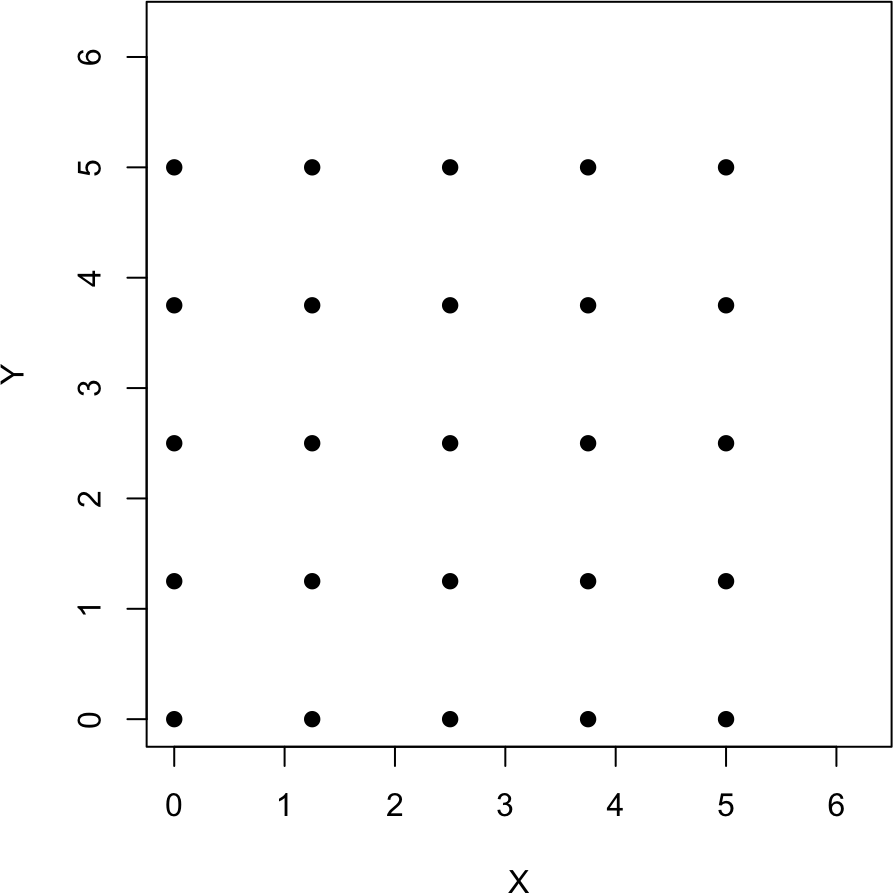
# Lennard-Jones force and potentialforce <-function(r){ r6 <- r^6return((1/r6/r6 -1/r6) / r) # F(r) = 1/r^13 - 1/r^7}E_LJ <-function(r){ r6 <- r^6return(1/(12*r6*r6) -1/(6*r6))}r_all <-seq(0.01, 4, by =0.01)plot(r_all, force(r_all), type ="l", xlab ="r", ylab ="F", xlim =c(0,4), ylim =c(-0.5,1))abline(h =0, lty =3, col =2)
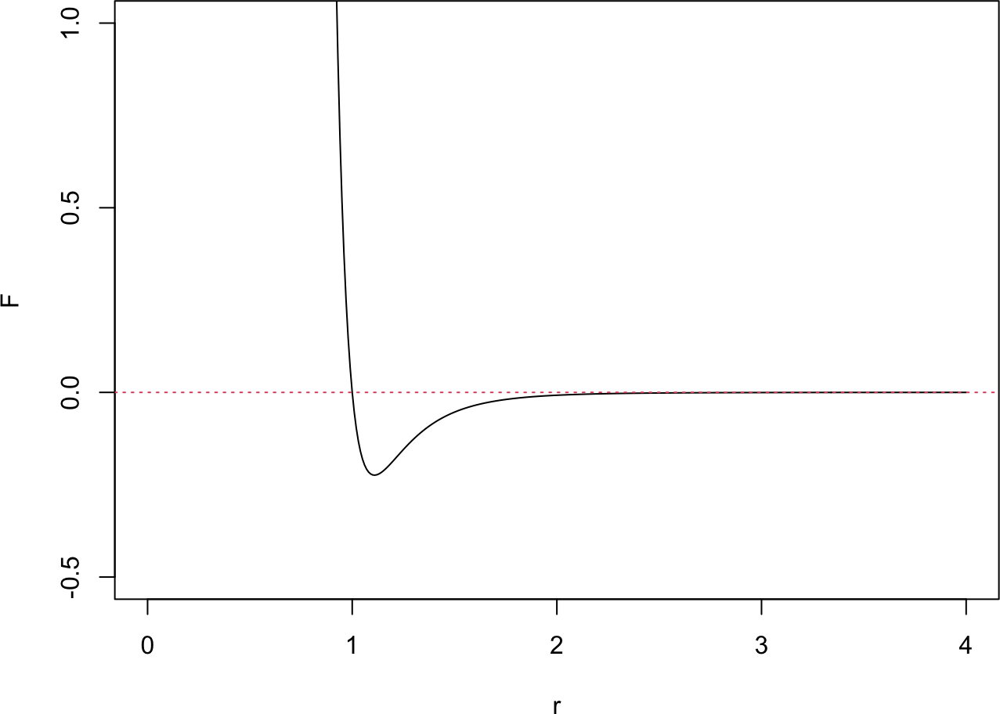
plot(r_all, E_LJ(r_all), type ="l", xlab ="r", ylab ="LJ potential", xlim =c(0,4), ylim =c(-1,2))abline(h =0, lty =3, col =2)
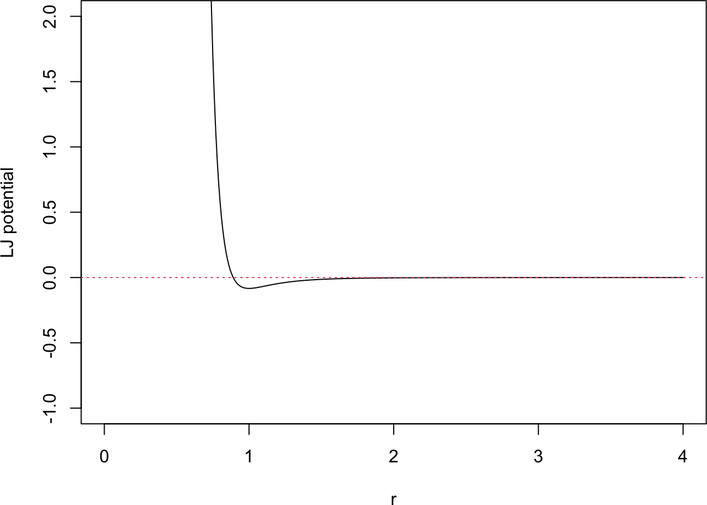
Python implementation
import numpy as npimport matplotlib.pyplot as plt# initial configuration: 25 particles on an evenly spaced gridntot =25; a =6.25grid_pts = np.arange(0, 5.01, 1.25)# build the grid in the same order as R's expand.grid (grid_x varies fastest)xy0 = np.array([(gx, gy) for gy in grid_pts for gx in grid_pts])plt.plot(xy0[:,0], xy0[:,1], "o", ms=8, linestyle="")plt.gca().set_aspect("equal")plt.xlabel("X"); plt.ylabel("Y"); plt.xlim(0, a); plt.ylim(0, a); plt.show()
5C.2 Periodic boundaries and the minimum image convention
To model a bulk system with only a few particles, we wrap the box with periodic boundary conditions: a particle that leaves one side re-enters from the opposite side. A coordinate is folded back into \([0, a)\) by subtracting the largest multiple of \(a\) below it.
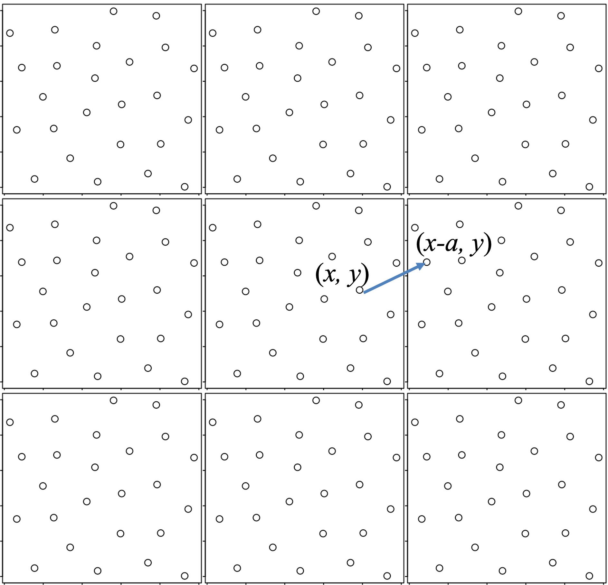
Because each particle now stands for an infinite lattice of periodic images, a pair of particles has infinitely many separations. The minimum image convention keeps only the nearest one: shift each coordinate difference by the nearest multiple of \(a\) before measuring the distance.
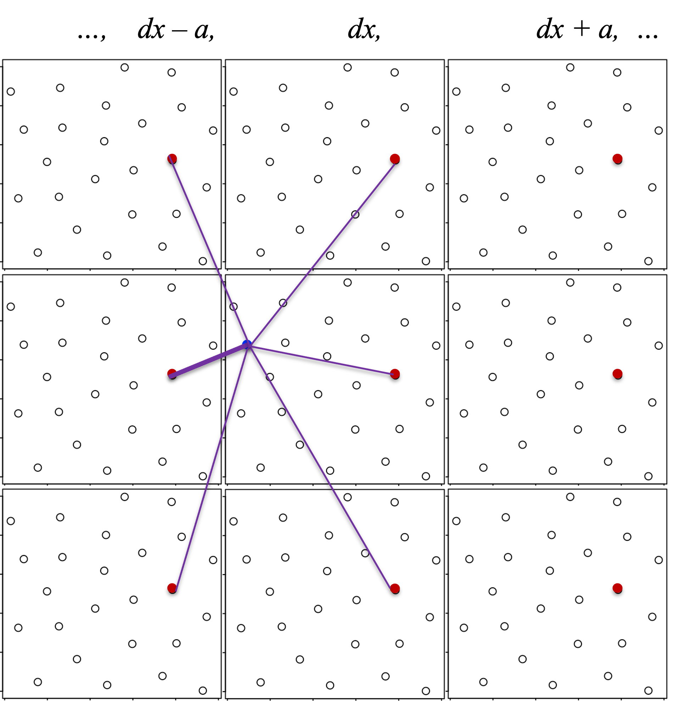
R implementation
# fold a position back into the box [0, a)x <-c(-5.5, 4.2); a <-2xnew <- x -floor(x / a) * a # floor: largest integer below x/ax; xnew
[1] -5.5 4.2
[1] 0.5 0.2
# nearest-image distance between two particlesxi <-c(0.7, 1.9); xj <-c(1.8, 1.2); a <-2dx <- xj - xir1 <-sqrt(sum(dx^2)) # direct distancedx <- dx -round(dx / a) * a # round: nearest integer -> nearest imager_min <-sqrt(sum(dx^2)) # minimum-image distancer1; r_min
[1] 1.30384
[1] 1.140175
Python implementation
# fold a position back into the box [0, a)x = np.array([-5.5, 4.2]); a =2xnew = x - np.floor(x / a) * a # floor: largest integer below x/aprint("x =", x)
x = [-5.5 4.2]
print("xnew =", xnew)
xnew = [0.5 0.2]
# nearest-image distance between two particlesxi = np.array([0.7, 1.9]); xj = np.array([1.8, 1.2]); a =2dx = xj - xir1 = np.sqrt(np.sum(dx**2)) # direct distancedx = dx - np.round(dx / a) * a # round: nearest integer -> nearest imager_min = np.sqrt(np.sum(dx**2)) # minimum-image distanceprint("r1 =", r1)
r1 = 1.3038404810405297
print("r_min =", r_min)
r_min = 1.1401754250991378
The velocities are never wrapped; only positions are folded back into the box.
5C.3 Computing the total force
The force that particle \(j\) exerts on particle \(i\) points along their minimum-image separation, with the sign and magnitude set by the LJ force \(F(r_{ij})\),
where \(r_{ij} = \sqrt{(x_i - x_j)^2 + (y_i - y_j)^2}\) is the minimum-image distance. The total force on particle \(i\) sums the pairwise contributions from every other particle. We store all coordinates in one length-\(2N_\text{tot}\) vector, ordered \((x_1, y_1, x_2, y_2, \ldots)\), and use Newton’s third law (\(f_{j \rightarrow i} = -f_{i \rightarrow j}\)) so each pair is evaluated once.
R implementation
# force from particle j on particle i (minimum image)force_j2i <-function(i, j, x_all, a){ xi <- x_all[2*i-1]; yi <- x_all[2*i] xj <- x_all[2*j-1]; yj <- x_all[2*j] dx <- xi - xj; dx <- dx -round(dx/a)*a dy <- yi - yj; dy <- dy -round(dy/a)*a rij <-sqrt(dx^2+ dy^2) fij <-force(rij)return(c(fij*dx/rij, fij*dy/rij))}# total force on every particle (length 2*Ntot)force_all <-function(t, x_all, a){ Ntot <-length(x_all)/2 f <-numeric(2*Ntot)for (i in1:(Ntot-1)) {for (j in (i+1):Ntot) { fij <-force_j2i(i, j, x_all, a) f[(2*i-1):(2*i)] <- f[(2*i-1):(2*i)] + fij f[(2*j-1):(2*j)] <- f[(2*j-1):(2*j)] - fij } }return(f)}
Python implementation
# force from particle j on particle i (minimum image); i, j are 1-baseddef force_j2i(i, j, x_all, a): xi, yi = x_all[2*i-2], x_all[2*i-1] xj, yj = x_all[2*j-2], x_all[2*j-1] dx = xi - xj; dx -= np.round(dx/a)*a dy = yi - yj; dy -= np.round(dy/a)*a rij = np.sqrt(dx**2+ dy**2) fij = force(rij)return np.array([fij*dx/rij, fij*dy/rij])# total force on every particle (length 2*Ntot)def force_all(t, x_all, a): Ntot =len(x_all)//2 f = np.zeros(2*Ntot)for i inrange(1, Ntot):for j inrange(i+1, Ntot+1): fij = force_j2i(i, j, x_all, a) f[2*i-2:2*i] += fij f[2*j-2:2*j] -= fijreturn f
5C.4 Velocity Verlet with periodic boundaries
Each particle obeys Newton’s equation with the summed LJ force,
and likewise for \(y_i\), with all masses \(m_i = 1\). We reuse velocity Verlet, but after each position update we fold every coordinate back into the box.
NoteRecipe 5C.4.1
Objective. Build a velocity-Verlet integrator that keeps particles inside a periodic box.
Model. Each unit-mass particle obeys d^2x_i/dt^2 = sum over j of the pair force, where the pair force is the Lennard-Jones force F(r) = 1/r^13 - 1/r^7 projected along the minimum-image separation between particles i and j.
Method. The velocity-Verlet integrator with a periodic-boundary correction x -> x - floor(x/a)*a, applied to positions (not velocities) after each position update.
Test. Box side a = 6.25 with 25 particles (the run in 5C.5); the folding rule is bc_periodic(x, a) = x - floor(x/a)*a.
Show. A short check that a particle stepping past a wall reappears on the opposite side.
Verification. A particle that leaves one side of the box reappears on the opposite side, while velocities are never wrapped.
R implementation
# fold all coordinates back into the boxbc_periodic <-function(x_all, a) x_all -floor(x_all/a) * a# velocity Verlet with a periodic-boundary correction each stepvelocity_verlet_bc <-function(f, t0, x0, v0, t.total, dt, ...){ t_all <-seq(t0, t.total, by = dt); nt_all <-length(t_all); nx <-length(x0) x_all <-matrix(0, nt_all, nx); v_all <-matrix(0, nt_all, nx) x_all[1,] <- x0; v_all[1,] <- v0for (i in1:(nt_all-1)) { v_half <- v_all[i,] +0.5* dt *f(t_all[i], x_all[i,], ...) x_all[i+1,] <- x_all[i,] + dt * v_half v_all[i+1,] <- v_half +0.5* dt *f(t_all[i+1], x_all[i+1,], ...) x_all[i+1,] <-bc_periodic(x_all[i+1,], ...) }return(cbind(t_all, x_all, v_all))}
We start every particle on the grid and give them small initial velocities. Rather than the random velocities one might use, we assign a fixed, evenly spread pattern (a golden-ratio sequence over the interval \((-0.05, 0.05)\)) so both languages start from exactly the same initial condition and the setup is fully reproducible. A short warm-up run to \(t = 10\) lets the ordered grid relax; a longer run to \(t = 100\) (time step \(dt = 0.01\)) then brings the system to a disordered, liquid-like state. We plot the configuration at the end of each stage.
NoteRecipe 5C.5.1
Objective. Simulate a 2D box of Lennard-Jones particles from an ordered start into a disordered liquid.
Model. 25 unit-mass particles in a square box of side a = 6.25 interacting through the Lennard-Jones force F(r) = 1/r^13 - 1/r^7 with minimum-image periodic boundaries.
Method. The velocity-Verlet integrator with periodic boundaries (from 5C.4).
Test. 25 particles on a 5x5 grid at spacing 1.25; deterministic initial velocities spread over (-0.05, 0.05) by a golden-ratio sequence; a warm-up run to t = 10 then a production run to t = 100, both at dt = 0.01.
Show. Snapshots of the particle positions in the box, from the initial grid to the final disordered state.
Verification. Particles start on the regular grid and end in an irregular liquid-like arrangement; because the many-body dynamics are chaotic, the exact final configuration differs between R and Python while structural averages match.
R implementation
# simulation parameters (the demos above reused `a` for a small illustrative box)ntot <-25; a <-6.25# grid positions (same order as the first figure) and deterministic velocitiesx0 <-as.vector(t(as.matrix(expand.grid(x = grid_pts, y = grid_pts))))k <-1:(2*ntot); phi <-0.6180339887498949# golden-ratio spacingv0 <-0.1* ((k * phi) %%1) -0.05# spread over (-0.05, 0.05)# warm-up run to t = 10res_init <-velocity_verlet_bc(force_all, 0, x0, v0, t.total =10, dt =0.01, a = a)last <- res_init[nrow(res_init), ]x0 <- last[2:(2*ntot+1)]; v0 <- last[(2*ntot+2):(4*ntot+1)]xy <-matrix(x0, ncol =2, byrow =TRUE)par(pty ="s")plot(xy[,1], xy[,2], pch =19, xlab ="X", ylab ="Y", xlim =c(0,a), ylim =c(0,a), asp =1)
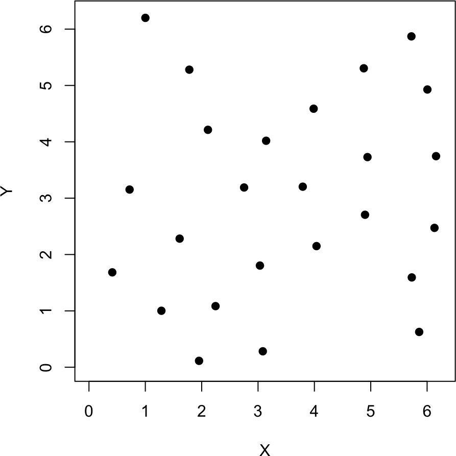
# longer run to t = 100res_final <-velocity_verlet_bc(force_all, 0, x0, v0, t.total =100, dt =0.01, a = a)x_f <- res_final[nrow(res_final), 2:(2*ntot+1)]xy_f <-matrix(x_f, ncol =2, byrow =TRUE)par(pty ="s")plot(xy_f[,1], xy_f[,2], pch =19, xlab ="X", ylab ="Y", xlim =c(0,a), ylim =c(0,a), asp =1)
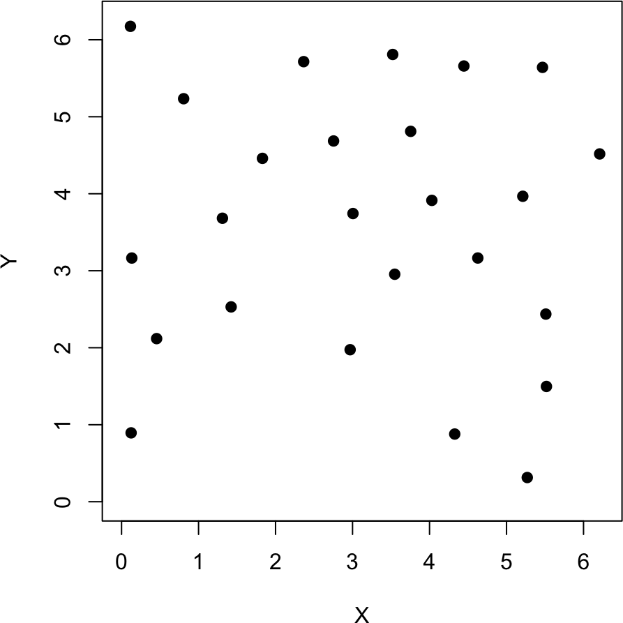
Python implementation
# simulation parameters (the demos above reused `a` for a small illustrative box)ntot =25; a =6.25# grid positions (same order as R) and deterministic velocitiesx0 = np.array([(gx, gy) for gy in grid_pts for gx in grid_pts]).flatten()k = np.arange(1, 2*ntot+1); phi =0.6180339887498949# golden-ratio spacingv0 =0.1* ((k * phi) %1) -0.05# spread over (-0.05, 0.05)# warm-up run to t = 10res_init = velocity_verlet_bc(force_all, 0, x0, v0, t_total=10, dt=0.01, a=a)last = res_init[-1]x0 = last[1:2*ntot+1]; v0 = last[2*ntot+1:]xy = x0.reshape(-1, 2)plt.plot(xy[:,0], xy[:,1], "o", ms=8, linestyle="")plt.gca().set_aspect("equal")plt.xlabel("X"); plt.ylabel("Y"); plt.xlim(0,a); plt.ylim(0,a); plt.show()
The particles start on the regular grid, and by the end of the long run they have spread into an irregular, disordered arrangement, the signature of a liquid. This many-body system is chaotic, so the exact final configuration is exquisitely sensitive to rounding and differs between the R and Python runs (and from one machine to another) even though both begin from the same initial condition. Structural averages such as the radial distribution function below are reproducible, however, which is what we actually care about.
5C.6 Animating the simulation
As in Part 5B, the run is much easier to read as an animation than as a pair of snapshots. The code below renders the box simulation to a GIF; as before it is shown to run locally rather than executed at build time.
R implementation
library(ggplot2)library(gganimate)library(gifski)# subsample the trajectory into discrete frames. transition_manual draws each# frame as-is, with no interpolation, so a particle that wraps around a periodic# edge does not streak across the box (transition_time would tween and streak it).step <-50sub <- res_final[seq(1, nrow(res_final), by = step), ]ind_x <-seq(2, 2*ntot, by =2) # columns holding x coordinatesind_y <-seq(3, 2*ntot+1, by =2) # columns holding y coordinatesdf <-data.frame(frame =rep(seq_len(nrow(sub)), ntot),tlab =rep(sprintf("%.1f", sub[,1]), ntot),x =as.vector(sub[, ind_x]),y =as.vector(sub[, ind_y]),particle =as.character(rep(1:ntot, each =nrow(sub))))p <-ggplot(df, aes(x = x, y = y, colour = particle)) +geom_point(size =6, alpha =0.7, show.legend =FALSE) +coord_fixed(xlim =c(0, a), ylim =c(0, a)) +# square plot box (x and y are equivalent)labs(x ="x", y ="y")anim <- p +transition_manual(frame) +labs(title ="t = {df$tlab[df$frame == as.integer(current_frame)][1]}")anim <-animate(anim, nframes =nrow(sub), fps =20,width =480, height =480, renderer =gifski_renderer())anim_save("md.gif", animation = anim)
The code produces an animation of the particle dynamics.
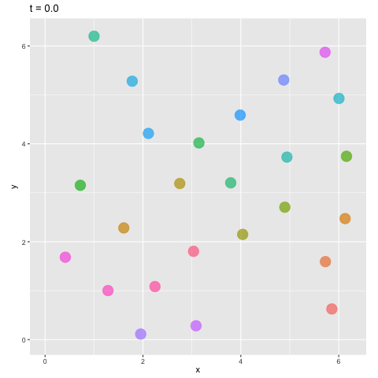
The box simulation as an animation, rendered here with the R gganimate implementation above (the Python matplotlib version produces an equivalent GIF). It plays only in the HTML edition.
5C.7 Radial distribution function
The radial distribution function \(g(r)\) summarizes the structure of the fluid: it is the probability of finding a particle a distance \(r\) from a reference particle, relative to the uniform (ideal-gas) expectation,
\[ g(r) = \frac{\langle \rho(r) \rangle}{\rho_0} = \frac{\langle \Delta N(r) \rangle}{2\pi r \, \Delta r \, \rho_0} , \tag{4} \]
where \(\rho_0 = N_\text{tot} / a^2\) is the mean density and \(\langle \Delta N(r) \rangle\) is the average count of particles in a shell of radius \(r\) and thickness \(\Delta r\) around a reference particle, averaged over all particles and all time steps.
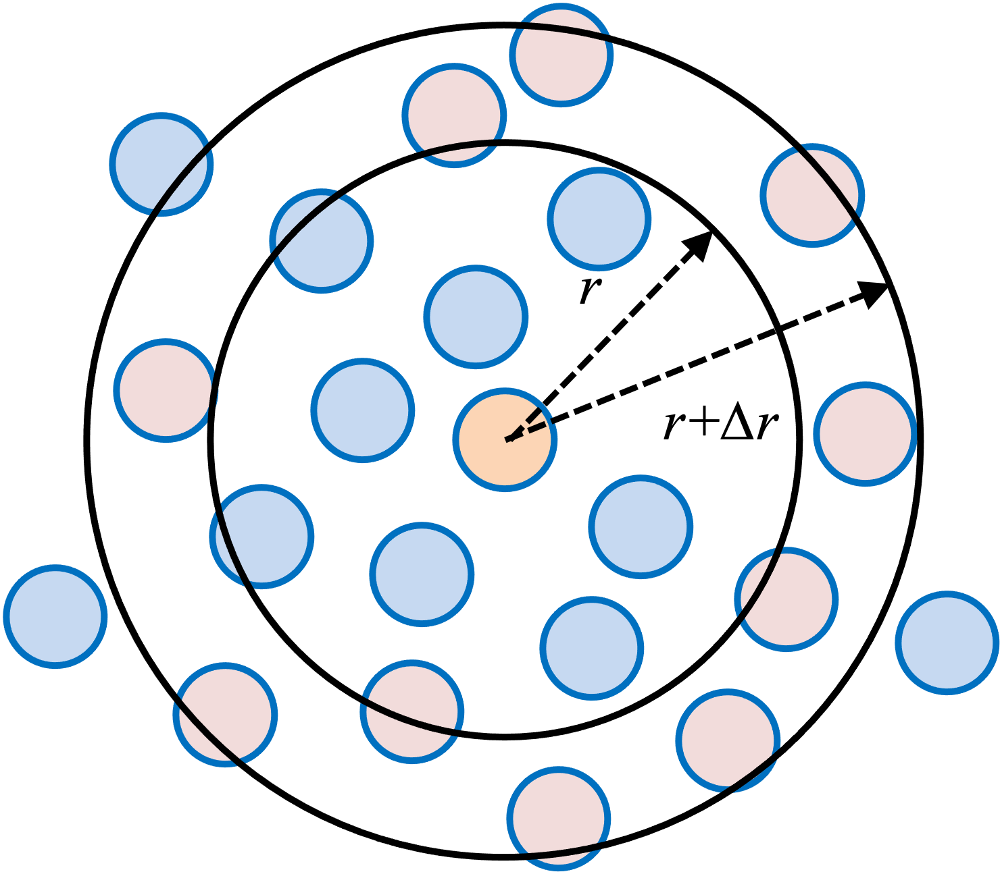
We bin pairwise minimum-image distances up to \(r = a/2\) (beyond that, a shell no longer fits inside the periodic box) with \(\Delta r = 0.05\), normalizing each bin by its shell area and the mean density.
NoteRecipe 5C.7.1
Objective. Measure the radial distribution function of the simulated particle box.
Model. The radial distribution function g(r) = <dN(r)> / (2*pi*r*dr*rho0), where rho0 = N/a^2 is the mean density and <dN(r)> is the average number of particles in a shell of radius r and thickness dr around a reference particle.
Method. The radial distribution function g(r), computed by histogramming minimum-image pair distances and normalizing each bin by its shell area 2*pi*r*dr and the mean density.
Test. The t = 100 trajectory from 5C.5 (25 particles, box side a = 6.25); bin width dr = 0.05, radii up to a/2 = 3.125.
Show. A plot of g(r) versus r, with its first and second peaks.
Verification. g(r) has the classic liquid shape: near zero below about r = 0.8, a sharp first peak near r = 1 (the Lennard-Jones equilibrium separation), a weaker second peak near r = 2, settling toward 1 at large r.
R implementation
cal_rdf <-function(ntot, results, a, dr){ nt_all <-nrow(results) r_all <-seq(dr, a/2, by = dr); nr <-length(r_all) counts <-numeric(nr)for (nt in1:nt_all) { x_all <- results[nt, 2:(2*ntot+1)]for (i in1:ntot) {for (j in1:ntot) {if (i != j) { dx <- x_all[2*i-1] - x_all[2*j-1]; dx <- dx -round(dx/a)*a dy <- x_all[2*i] - x_all[2*j]; dy <- dy -round(dy/a)*a rij <-sqrt(dx^2+ dy^2) ind <-ceiling(rij/dr)if (ind <= nr) counts[ind] <- counts[ind] +1 } } } } r_mean <- r_all -0.5*dr rho <- counts / nt_all / ntot / (2*pi*dr*r_mean)return(list(r = r_mean, rdf = rho / (ntot/a^2)))}rdf <-cal_rdf(ntot, res_final, a, dr =0.05)plot(rdf$r, rdf$rdf, type ="l", col =2, xlab ="r", ylab ="g(r)")
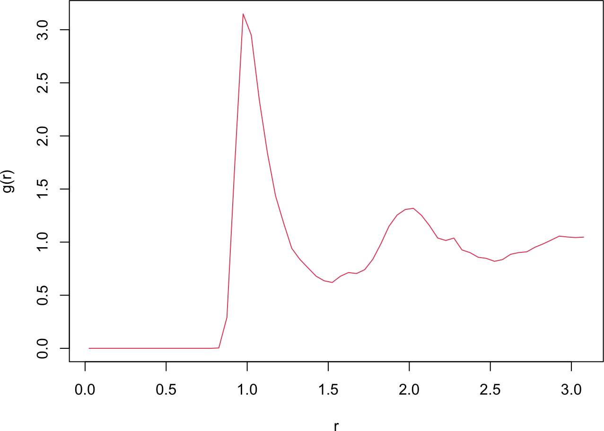
Python implementation
def cal_rdf(ntot, results, a, dr): nt_all = results.shape[0] r_all = np.arange(dr, a/2, dr); nr =len(r_all) counts = np.zeros(nr)for nt inrange(nt_all): x_all = results[nt, 1:2*ntot+1:2] y_all = results[nt, 2:2*ntot+1:2]for i inrange(ntot):for j inrange(ntot):if i != j: dx = x_all[i] - x_all[j]; dx -= np.round(dx/a)*a dy = y_all[i] - y_all[j]; dy -= np.round(dy/a)*a rij = np.sqrt(dx**2+ dy**2) ind =int(np.ceil(rij/dr))if ind <= nr: counts[ind-1] +=1 r_mean = r_all -0.5*dr rho = counts / (nt_all * ntot *2*np.pi*dr*r_mean)return r_mean, rho / (ntot/a**2)r_mean, rdf = cal_rdf(ntot, res_final, a, dr=0.05)plt.plot(r_mean, rdf, color="red")plt.xlabel("r"); plt.ylabel("g(r)"); plt.show()
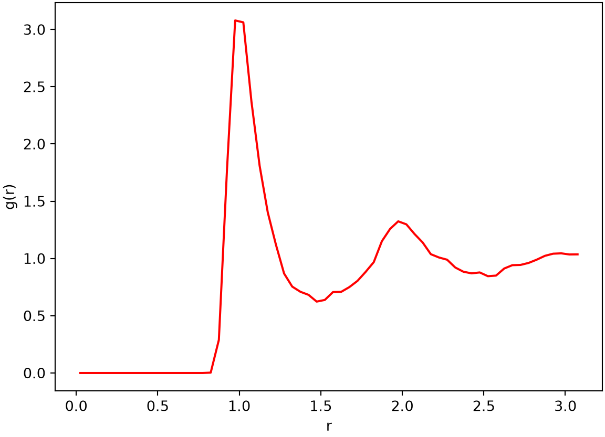
The RDF has the shape typical of a liquid. It is near zero below \(r \approx 0.8\), where the strong LJ repulsion forbids close approach, then rises to a sharp first peak near \(r = 1\), the first coordination shell at the LJ equilibrium separation. A weaker second peak near \(r = 2\) marks the second shell, and at larger \(r\) the function settles toward \(1\), the hallmark of short-range order with long-range disorder.
Two caveats. This is a two-dimensional system; the same machinery extends to three dimensions for more realistic models, where some properties differ. And for a clear illustration we used a large time step and a short run; quantitatively reliable results need a smaller step and a much longer simulation.
Allen, Michael P., and Dominic J. Tildesley. 2017. Computer Simulation of Liquids. 2nd ed. Oxford University Press.
Lennard-Jones, J. E. 1924. “On the Determination of Molecular Fields. II. From the Equation of State of a Gas.”Proceedings of the Royal Society of London A 106 (738): 463–77. https://doi.org/10.1098/rspa.1924.0082.